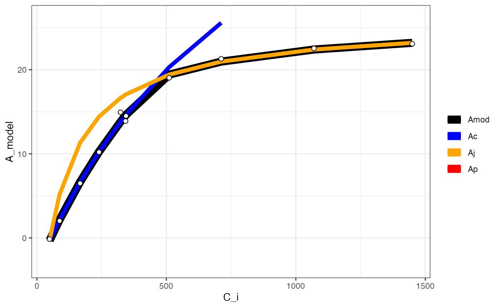
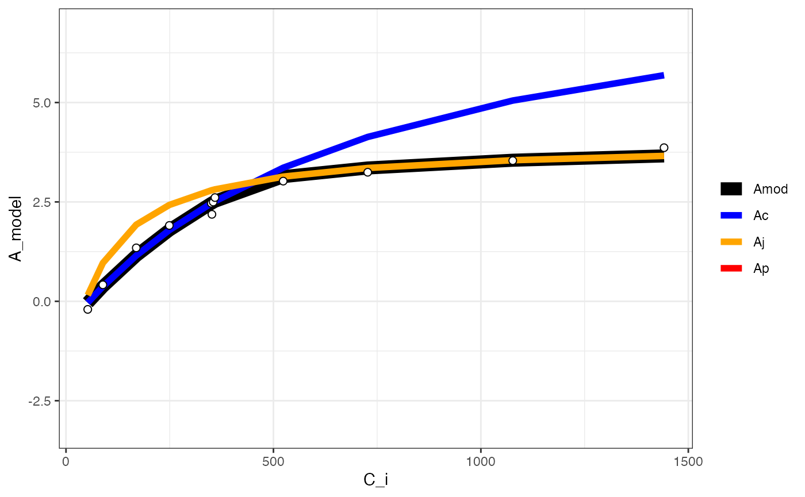

vignettes/co2-response.Rmd
co2-response.RmdThis package currently implements a Gu-type fitting procedure for CO2 response curves similar to the Duursma (2015) implementation. There is ongoing work to implement a full Gu-type method whereby mesophyll conductance, Km, and GammaStar could all be fit (Gu et al. 2010).
library(dplyr)
library(photosynthesis)
# Read in your data
dat = system.file("extdata", "A_Ci_Q_data_1.csv", package = "photosynthesis") |>
read.csv() |>
mutate(
# Set grouping variable
group = as.factor(round(Qin, digits = 0)),
# Convert data temperature to K
T_leaf = Tleaf + 273.15
) |>
rename(A_net = A, PPFD = Qin, C_i = Ci)
# Fit ACi curve.
# Note that we are filtering the data.frame to fit for a single light value
fit = fit_aci_response(filter(dat, group == 1500))
# View fitted parameters
fit[[1]]## Num V_cmax V_cmax_se J_max J J_se V_TPU V_TPU_se R_d
## 6 0 62.797 2.176227 110.3051 103.9718 0.1847135 1000 NA -0.3470509
## R_d_se cost citransition1 citransition2 V_cmax_pts J_max_pts V_TPU_pts
## 6 0.3947545 1.063979 427.6839 1450.485 8 4 0
## alpha alpha_g gamma_star25 Ea_gamma_star K_M25 Ea_K_M g_mc25 Ea_g_mc Oconc
## 6 0.24 0 42.75 37830 718.4 65508.28 0.08701 0 21
## theta_J
## 6 0.85
# View graph
fit[[2]]## Warning: Removed 2 rows containing missing values (`geom_line()`).## Warning: Removed 12 rows containing missing values (`geom_line()`).
# View data with modeled parameters attached
# fit[[3]]
# Fit many curves
fits = fit_many(
data = dat,
funct = fit_aci_response,
group = "group",
progress = FALSE
)
# Print the parameters
# First set of double parentheses selects an individual group value
# Second set selects an element of the sublist
fits[[3]][[1]]## Num V_cmax V_cmax_se J_max J J_se V_TPU V_TPU_se R_d
## 6 0 8.94862 0.5509706 47.01527 16.63315 0.08692268 1000 NA -0.1565895
## R_d_se cost citransition1 citransition2 V_cmax_pts J_max_pts
## 6 0.1264438 0.1194886 441.2967 1442.493 8 4
## V_TPU_pts alpha alpha_g gamma_star25 Ea_gamma_star K_M25 Ea_K_M g_mc25
## 6 0 0.24 0 42.75 37830 718.4 65508.28 0.08701
## Ea_g_mc Oconc theta_J
## 6 0 21 0.85
# Print the graph
fits[[3]][[2]]## Warning: Removed 12 rows containing missing values (`geom_line()`).
# Compile graphs into a list for plotting
fits_graphs = compile_data(fits, list_element = 2)
# Print graphs to jpeg
# print_graphs(data = fits_graphs, path = tempdir(), output_type = "jpeg")
# Compile parameters into data.frame for analysis
fits_pars = compile_data(fits, output_type = "dataframe", list_element = 1)Duursma R. 2015. Plantecophys - an R package for analysing and modeling leaf gas exchange data. PLoS ONE 10:e0143346
Gu L, Pallardy SG, Tu K, Law BE, Wullschleger SD. 2010. Reliable estimation of biochemical parameters from C3 leaf photosynthesis-intercellular carbon dioxide response curves. Plant, Cell & Environment 33:1582-1874.